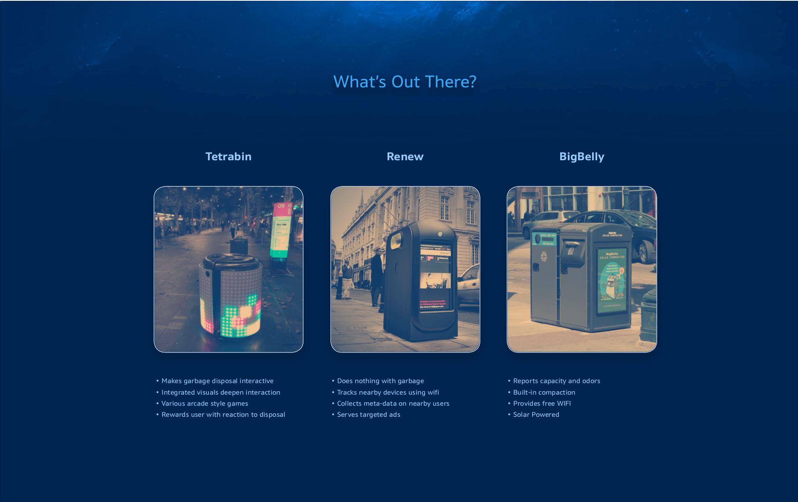

Smart Bin
Gain insight into household garbage composition and impact through abstract visualizations.
Year
2017
Type
Speculative Interface
Roles
Research, UI / UX
Problem
Household garbage bins have long been static and boring objects that we throw our waste into and forget about it. How do we make it easier for families to practice responsible waste management?
Transform an unpleasant object in the home into a pleasant one.

Outcome
A smart object that passively communicates garbage composition through surface visualizations and a companion app. Households can easily track the impact their garbage will have on the environment based on how 'healthy' the visualization appears.
Research
It was important to get a sense of similar products that may already exist and investigate their purpose, features, and pain points. I ended up comparing 3 existing products that all approached smart garbage in different ways. I applied my research to my own and married it with research into proper recycling methods.

Approach
Nobody wants to get up close and personal to garbage - especially not to analyse its contents - so I wanted to develop a system that would provide insight with a simple glance. I even tried to avoid text as much as possible, so figuring out how to represent garbage visually was key.
Make it beautiful.
Takeaway
Always question your own viewpoint.
It is important to keep an open mind and change your expectations of a project. Sometimes the most obvious solution is not the best one, and the solution you least expect works much better. In the context of this project, I underestimated the effectiveness of abstract visualizations to convey meaning.